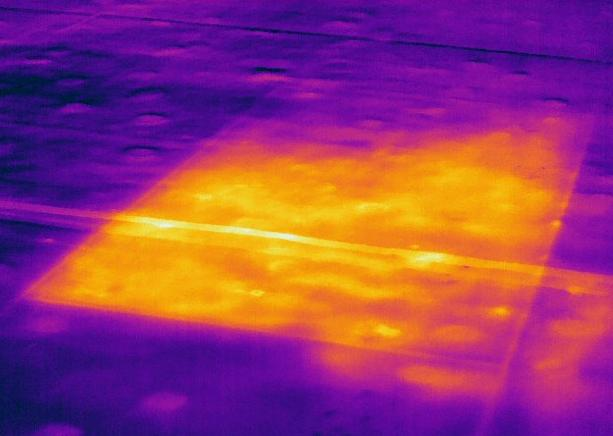
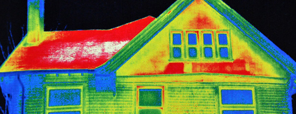

IR Wave


We are a family owned business based in Dallas, TX. We operate on the trust of our customers. Making sure the customer is completely satisfied is our main motto. We offer world class Infrared inspections to clients in Texas state. We use latest equipment and technologies to perform inspections that provide preventive maintenance by predicting the conditions. Our equipment provides you detailed reports with the data you need and want.
We have a great understanding of what Infrared radiations can provide.
Infrared is invisible light. It is an electromagnetic radiation that has wavelengths longer than the regular visible light. Infrared radiation is similar to UV rays, Microwaves and X rays. Every object on this planet earth radiate IR waves. We have the equipment to detect those radiations and provide insight into the object.
IR flat roof surveys provides you detailed information about trapped moisture problems in the roof. Our latest equipment helps us provide you the moisture location on the roof. Flat roof surveys are conducted usually at night. Our technicians provide you the moisture location on the roof using thermal imaging equipment.
IR building envelope surveys are nondestructive method for troubleshooting heat loss and moisture intrusion problems. Building envelope is the region that seperates interior environment with the exterior one. Building envelopes are the main drivers of climate control which in return help with energy consumption. We will help you determine the structure's condition with the latest equipment. Getting a Building envelope survey will help take cost-effective decisions for the future. We will help you determine the condition, analyze the problems and predict a different problem.
Our technicians, with the help of thermal imaging and Infrared cameras will help you detect the moisture intrusion problems on your roof. Moisture intrusion can be detected with naked eye by observing mold growth, but by the time you know about it, moisture will have caused significant damage to your structure. Moisture intursion detection can help you with energy efficiency as our equipment will help identify wet spots in the insulation and hidden leaks. We have the experience and knowledge to help you provide cost-effective solutions.
Concrete Masonry Units(CMUs) are used in many constructions as cost-effective solutions. Construction agencies prefer using these CMUs as the walls can be quickly built. Using our Infrared equipment we will help you determine cracks, leakage of air and insulation. At any point during the construction process the CMU walls can be tested. Our IR surveys provide you with images that can be used to understand the strength of the walls.